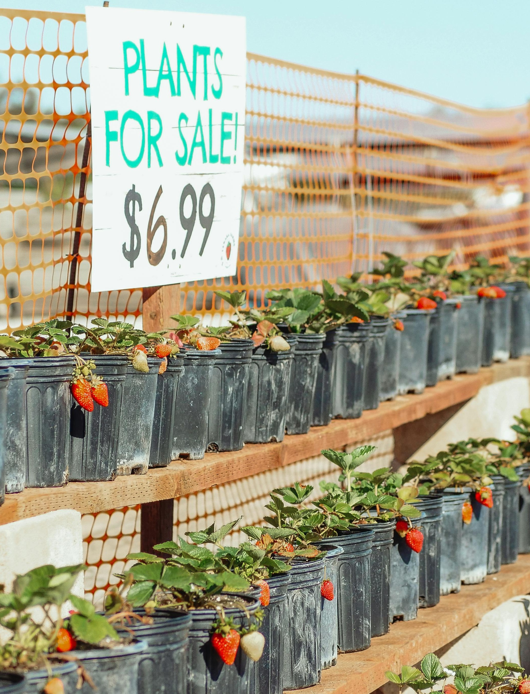

Our Story

Sprout & Grow began with a simple belief: that healthy gardens grow from healthy roots — in the soil, in the community, and in the way we care for our environment. What started as a small passion project in a backyard greenhouse has blossomed into Raleigh's trusted source for organic, sustainable gardening.
Founded by plant lovers with a deep respect for nature and a desire to do things differently, Sprout & Grow was built on a foundation of transparency, integrity, and a commitment to environmental stewardship. We saw a need for a nursery that not only offered beautiful, high-quality plants but also served as a guide and ally for gardeners seeking to tread lightly on the earth.
Every plant we nurture, every piece of advice we share, and every workshop we host is grounded in our mission: to empower our community with the tools and knowledge to grow sustainably — and joyfully.